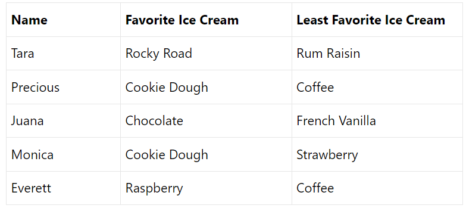

5 Modifying the look of the Quarto document
While the text editing capabilities of Quarto documents are useful, the main attraction is the ability to combine the information. However, depending on our audience and what we are trying to communicate, we may want to include different components in the rendered product. There are also
5.0.1 Code chunks
While the code chunk at the end of the last section showed three lines of code, the document I was looking at in my visual editor actually included an additional line:
The #| echo: true line here is a local instruction to the code chunk to change one of the settings. This only applies to this code chunk, and these instructions won’t show up in the rendered version of the document.
Let’s break it down. The #| symbol indicates that I want to give an instruction, and you’ll see this now shows up in a lighter color. The echo: option relates to the visibility of the code (if you think of code as instructions being issued, having it echo means having it repeated back to you before giving the output). Finally, this is set using a logical (true/false) value. So it’s saying to Quarto: “I want you to show the code here.” If I had instead set echo: to false, like so..
..then when I render the document, the table of abalone values would show up without any code.
These local options are used to suppress different kinds of activities in the code chunk. For example, the eval option will determine whether the code chunk will be run or not. This is helpful if you just want to show some code, but don’t want it to produce an outcome. Likewise, setting fig-show: hide will hide whatever plot is generated by the code. These options and their effects are listed in the table below:
Keep in mind that these are local effects, so whatever they are doing, they are only doing in that code chunk.
5.0.2 Additional elements
So far we’ve mostly talked about basic things you’d want to do with a . There are additional elements we might want to add to make our document more complete, including lists, tables, links and We’ll go over each of these in the sections below:
5.0.2.1 Ordered and ordered lists
Lists are useful for quickly outlining points or aspects of your data. You can start a list by clicking one of these buttons on the editor bar:

Unordered lists use bullets, while ordered lists use numbers. For example, you could take the following text:
Chocolate
Vanilla
Cookie Dough
And turn it into an unordered list like so:
Chocolate
Vanilla
Cookie Dough
Or into a numbered list like so:
Chocolate
Vanilla
Cookie Dough
5.0.2.2 Tables
Sometimes you may want to show information in a table. To do so, you can select Add Table from this drop-down menu:
That brings up a dialogue box that looks like this:

Here you can set the number of rows and columns of the table, Then you can fill in values

And it will render like this:
| Name | Favorite Ice Cream | Least Favorite Ice Cream |
|---|---|---|
| Tara | Rocky Road | Rum Raisin |
| Precious | Cookie Dough | Coffee |
| Juana | Chocolate | French Vanilla |
| Monica | Cookie Dough | Strawberry |
| Everett | Raspberry | Coffee |
There are also ways to render data stored in a tibble as a table, but this isn’t useful unless your data set is very small. We’ll cover how to do this in a later lesson.
5.0.2.3 Links
You can add hyperlinks to your (non-code chunk) text by selecting it and then clicking the Link button in on the editor bar.
This will bring up a dialogue box that looks like this:
You then have some options you can work with, including whether to link to a URL (an outside webpage) or to a header within the document. The latter can be useful if you have a large document and need to refer to different sections of it. You can also add some tooltip text that will show up when you hover the mouse over the link.
For example, if I had text like this:
This plot is for all the bobcars out there.
I could highlight the word bobcars, then add a link to a relevant webpage, which would render like this:
This plot is for all the bobcars out there.
5.0.2.4 Images
Sometimes you may have an image you’d like to include in your document that is not generated by a code chunk. For example, if you’re doing a study of bobcat ranges, you could add an image of a bobcat. To do this, click the Image button:
That will bring up a dialogue box that looks like this:
For the first field in this dialogue, you can either specify a location of a file stored on your computer or a URL for an image on the web. For example, I could use
The alignment setting will tell you where on the page you’d like the image to appear. Alternative text refers to a text description of the image which is used for accessibility purposes. You can also add a caption, which is also a good place to add a citation for the image. For example, I could use the image here by adding the URL, then I can add a caption that includes information about where I found it.

In your Quarto document, load the modeldata package create a new heading for “Sacramento Home Sizes” Under that heading, add the following elements:
Some text discussing what your data are, linking to a website about Sacramento
An image of the Sacramento skyline (with citation in caption)
A code chunk that loads the modeldata package and produces a boxplot of home square footage by type